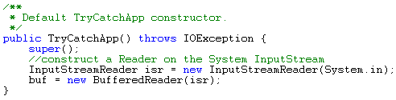
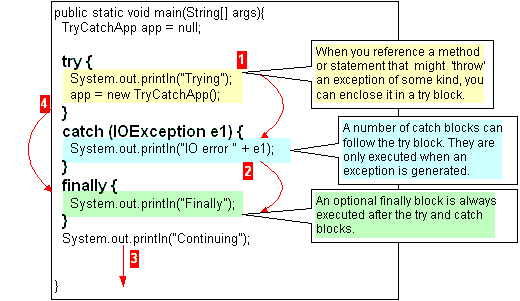

Handling Exceptions. |
Example
|
|
Java builds exception handling into the language, and treats error and exception conditions as objects. Instead of using a return-code with some cryptic value to signal an error of some kind, Java contains a family of related classes that are used to build new error and exception objects, that have meaningful properties. These exception objects, are passed between methods in a very formalized manner, so that you cannot ‘forget’ to handle the exceptions thrown back to you by a method call. When you reference a method that might throw back an exception of some kind, the Java compiler will insist that you 'handle' that type of exception. 1. One way to handle an exception is to simply
declare that your method throws that type of exception to its caller.
This is like 'passing the buck'. A method can only throw those exceptions
that are listed after the throws
keyword in its definition. But because Java treats objects polymorphically,
you can also throw
objects made from subclasses of those exceptions in the throws clause
of the method. In this example the TryCatchApp() constructor method simply throws any IOException that might be generated when building a buffered character reader, back to the statement that called the constructor.  Incidentally most computer languages have an internal means of keeping track of all the 'branching' that goes on during program execution. Generally they do this by keeping a 'trace' or history of all the execution branch points in a 'stack'. A stack is a type of first in first out (FIFO) queue in memory (think of a stack of pancakes). 2. The other way to 'handle' exceptions is to enclose the 'risky' statement in a try … catch ( ); statement (as shown below).  The red arrows in the above diagram are showing the possible routes
of execution. If there is no catch block that corresponds to the exception, then the compiler will ensure that the method in turn, throws that exception type up the call chain. If an uncaught exception is generated by the try block, the finally block is still executed, before the exception is passed back up the calling chain. Obviously in this case, method execution does not continue. |
|